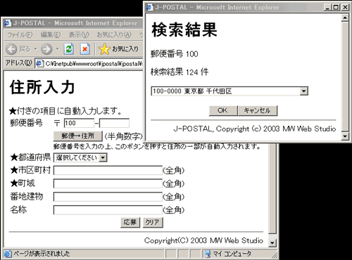

ステップ１：
|
| アップロード元 (ステップ０の図0-1と同じ構成) |
アップロード先 (ステップ０の図0-3と同じ構成) |
※1 |
http://myserver/mysite/ ※2 ステップ２で編集およびアップロード予定 ※3 サンプルの住所入力フォーム |
図1-1 アップロード元とアップロード先
1.2 FTP転送モード
アスキー、漢字変換なし、上書きコピーで、アップロードします。
※FTPサーバー上のディレクトリ構成は、お使いのWebサーバーの設定を調べるか、管理者に問い合わせてください。
1.3 サンプルの住所入力フォームを表示する
- サンプルの住所入力フォームのURLは、http://myserver/mysite/jpostal/sample/sample001.html
です。WebブラウザのアドレスバーにURLを直接入力して表示します。
↓
図1-2の左側のような「住所入力」フォームが表示されます。
- 郵便番号 100
を入力し、【郵便→住所】ボタンを押します。
↓
図1-2の右上のような「住所検索」子ウィンドウが開きます。子ウィンドウ内には住所一覧リストが表示されているはずです。
- 「住所検索」子ウィンドウの住所一覧リストの[100-0000
東京都千代田区]を選択します。
【OK】ボタンを押します。
↓
「住所検索」子ウィンドウが閉じます。
「住所入力」フォームに 100, 0000, 東京都, 千代田区 が自動入力されているはずです。
※【応募】ボタンを押しても、送信先CGIを設定していないので、サーバーエラーまたは無意味な表示になります。

図1-2 サンプルの住所入力フォームと子ウィンドウ